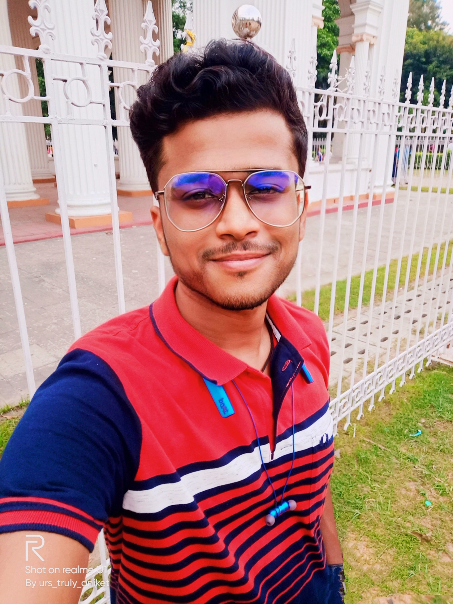

Aniket Kirtania

Summary
I am a web development enthusiast. Committed to continuous learning and passionate about creating user-friendly and responsive websites.
Education
- B.Tech | 2023 | 9.47 GPA
UEM Kolkata
- Higher Secondary | 2019 | 63%
KVB Kolkata
- Secondary | 2016 | 8 CGPA
KVK Assam
Skills
- HTML : ⭐️⭐️⭐️⭐️
- C Programming : ⭐️⭐️⭐️⭐️
- Python : ⭐️⭐️⭐️
Achievements
-
Published a conference paper on "An Intelligent fire-fighting Robotic System to Combat fire in Coal Mines."
Others